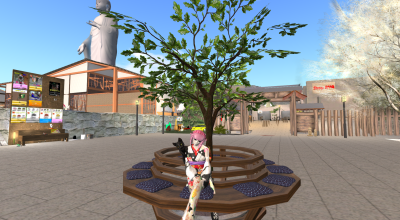
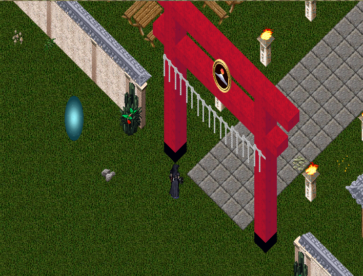
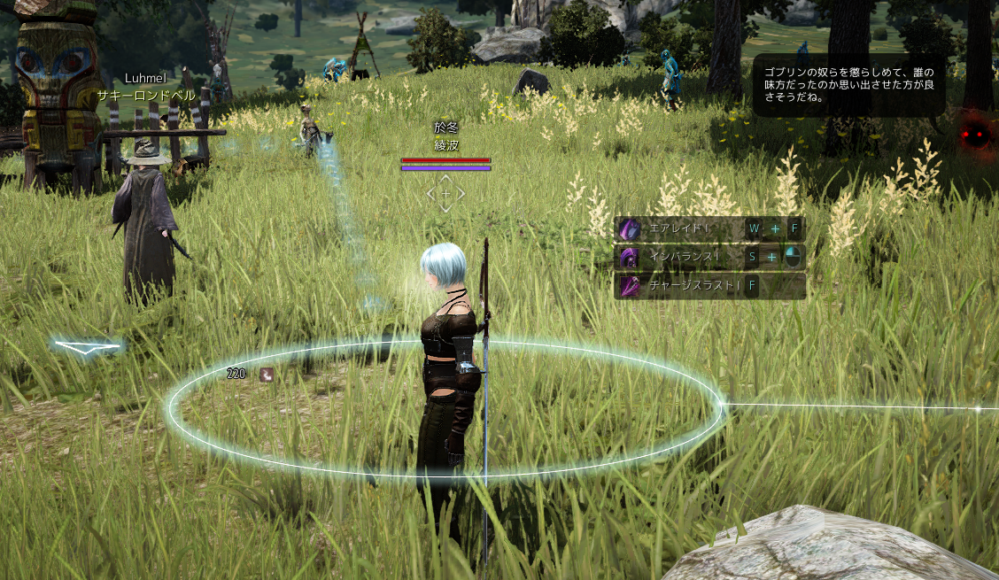

<!DOCTYPE html>
<html>
<head><meta name="generator" content="Hexo 3.8.0">
  <meta charset="utf-8">
  
  
  <title>おとぶろぐ</title>
  <meta name="viewport" content="width=device-width, initial-scale=1, maximum-scale=1">
  
  <meta property="og:type" content="website">
<meta property="og:title" content="おとぶろぐ">
<meta property="og:url" content="https://otoblog.xyz/index.html">
<meta property="og:site_name" content="おとぶろぐ">
<meta property="og:locale" content="ja">
<meta name="twitter:card" content="summary">
<meta name="twitter:title" content="おとぶろぐ">
  
    <link rel="alternative" href="/atom.xml" title="おとぶろぐ" type="application/atom+xml">
  
  
    <link rel="icon" href="/favicon.png">
  
  <link href="//fonts.googleapis.com/css?family=Inconsolata" rel="stylesheet" type="text/css">
  <link rel="stylesheet" href="/css/style.css">
  
<!-- Google Analytics -->
<script type="text/javascript">
(function(i,s,o,g,r,a,m){i['GoogleAnalyticsObject']=r;i[r]=i[r]||function(){
(i[r].q=i[r].q||[]).push(arguments)},i[r].l=1*new Date();a=s.createElement(o),
m=s.getElementsByTagName(o)[0];a.async=1;a.src=g;m.parentNode.insertBefore(a,m)
})(window,document,'script','//www.google-analytics.com/analytics.js','ga');

ga('create', 'UA-141131399-1', 'auto');
ga('send', 'pageview');

</script>
<!-- End Google Analytics -->


  

</head>
</html>
<body>
  <div id="container">
    <div id="wrap">
      <header id="header">
  <div id="header-outer" class="outer">
    <div id="header-title" class="inner">
      <h1 id="logo-wrap">
        <a href="/" id="logo">おとぶろぐ</a>
      </h1>
      
        <h2 id="subtitle-wrap">
          <a href="/" id="subtitle">とある底辺字書きのささやかな呟き</a>
        </h2>
      
    </div>
    <div id="header-inner" class="inner">
      <nav id="main-nav">
        <a id="main-nav-toggle" class="nav-icon"></a>
        
          <a class="main-nav-link" href="/">Home</a>
        
          <a class="main-nav-link" href="/archives">Archives</a>
        
      </nav>
      <nav id="sub-nav">
        
          <a id="nav-rss-link" class="nav-icon" href="/atom.xml" title="RSS Feed"></a>
        
        
          <a id="nav-search-btn" class="nav-icon" title="Search"></a>
        
      </nav>
      <div id="search-form-wrap">
        <form action="//google.com/search" method="get" accept-charset="UTF-8" class="search-form"><input type="search" name="q" class="search-form-input" placeholder="Search"><button type="submit" class="search-form-submit">&#xF002;</button><input type="hidden" name="sitesearch" value="https://otoblog.xyz"></form>
      </div>
    </div>
  </div>
</header>

      <div class="outer">
        <section id="main">
  
    <article id="post-新年早々……" class="article article-type-post" itemscope itemprop="blogPost">
  <div class="article-meta">
    <a href="/20200103-1/" class="article-date">
  <time datetime="2020-01-03T07:05:00.000Z" itemprop="datePublished">2020-01-03</time>
</a>

    
  <div class="article-category">
    <a class="article-category-link" href="/categories/Game/">Game</a>
  </div>


  </div>
  <div class="article-inner">
    

    
      <header class="article-header">
        
  
    <h1 itemprop="name">
      <a class="article-title" href="/20200103-1/">新年早々……</a>
    </h1>
  


      </header>
    
    <div class="article-entry" itemprop="articleBody">
      
        <div class="article-sharing">
  <ul>
    <li>
      <a href="http://twitter.com/share" class="twitter-share-button" data-url="https://otoblog.xyz/20200103-1/" data-via="{{ theme.twitter }}" data-counturl="https://otoblog.xyz/20200103-1/">Tweet</a>
    </li>
    <li>
      <div class="fb-like" data-send="false" data-layout="button_count" data-show-faces="false" data-font="verdana" data-href="https://otoblog.xyz/20200103-1/"></div>
    </li>
  </ul>
</div>

      
      
        
        <p>どもです。<br>明けましておめでとうございます。今年もちまちまとやってくんでよろしくです。</p>
<p>さてさて。</p>
<p>新年早々からゲーム三昧な日々を過ごしています。1番ハマっているのがSecond Life。これをゲームといっていいのかちょっと疑問ですが……。(￣▽￣;)<br>実は1年前に登録だけしていたのですが、前に使ってたノートPCだと重すぎて遊べずようやくPCを新調したので遊べるようになったらズブズブとハマりました。</p>
<p></p>
<p>3Dなのでとっても綺麗です。こうやって広場でボーっとしてたりショップでお買い物するのが楽しいです。さらにコミュニケーションとかができるともっと面白いかも。人見知りの激しい自分ですが。(￣▽￣;)</p>
<p>続きましてはUltima Online。こちらは有名なMMORPGですね。</p>
<p></p>
<p>これは一昨年10年ぶりに復帰して以来ずーっと遊んでいるので今更感満載ですが……。今ちょっとSecond Lifeに押されててあんましログインしてないかな？(￣▽￣;)</p>
<p>ラスト。黒い砂漠。最近の超美麗MMORPGです。</p>
<p></p>
<p>前々から遊んでみたかった作品です。さすがにPCスペックの関係で最高画質ではなく高画質ですが十分満足しています。アクションがちょっと苦手なのでその辺は苦労していますが。(￣▽￣;)</p>
<p>ちうことで、日がな一日PCの前で遊んでる今日この頃でした。<br>いい加減小説も書きたいのですがねぇ……(￣▽￣;)</p>
<p>それではまた。</p>

      
      
    </div>
    <footer class="article-footer">
      
        <a data-url="https://otoblog.xyz/20200103-1/" data-id="ck4xtxhms00002j6igli8m71r" class="article-share-link">Share</a>
      
      
      
  <ul class="article-tag-list"><li class="article-tag-list-item"><a class="article-tag-list-link" href="/tags/Game/">Game</a></li></ul>


    </footer>
  </div>
  
</article>


  
    <article id="post-自作PC完成！" class="article article-type-post" itemscope itemprop="blogPost">
  <div class="article-meta">
    <a href="/20191227-1/" class="article-date">
  <time datetime="2019-12-27T07:52:31.000Z" itemprop="datePublished">2019-12-27</time>
</a>

    
  <div class="article-category">
    <a class="article-category-link" href="/categories/PC/">PC</a>
  </div>


  </div>
  <div class="article-inner">
    

    
      <header class="article-header">
        
  
    <h1 itemprop="name">
      <a class="article-title" href="/20191227-1/">自作PC完成！</a>
    </h1>
  


      </header>
    
    <div class="article-entry" itemprop="articleBody">
      
        <div class="article-sharing">
  <ul>
    <li>
      <a href="http://twitter.com/share" class="twitter-share-button" data-url="https://otoblog.xyz/20191227-1/" data-via="{{ theme.twitter }}" data-counturl="https://otoblog.xyz/20191227-1/">Tweet</a>
    </li>
    <li>
      <div class="fb-like" data-send="false" data-layout="button_count" data-show-faces="false" data-font="verdana" data-href="https://otoblog.xyz/20191227-1/"></div>
    </li>
  </ul>
</div>

      
      
        
        <p>どもです。気が付けば12月もあと少しですね。<br>いろいろバタバタしていましたが、遂に自作PCを組み上げました。用意したパーツは以下の通りです。</p>
<p>CPU：Intel Core i3 9100F Box　¥9328<br>マザーボード：ASUS PRIME B365M-A 　¥9990<br>グラフィックボード：玄人志向 RD-RX560-E2GB/OC Rev.2.0　¥9579<br>メモリ：Patriot PSD48G 240081 ×2　¥6400<br>SSD：ADATA ASU650SS-240GT-R　¥3293<br>HDD：Western Digital WD10EZEX　¥4791<br>電源：玄人志向 KRPW-L5-500W/80+　¥3478<br>Wi-Fiアダプタ：TP-LINK TL-WN725N　¥713<br>ケース：Tharmaltake Versa H17　¥2915<br>モニタ：ASUS VZ239HR　(Amazon限定)　¥10880<br>HDMIケーブル：ELECOM CAC-HD14E10BK2　¥1080</p>
<p>合計で62447円になりました。モニタを抜くと5万とちょっとです。ちょっと高くついたかな？本来は本体を4万台で抑える予定だったんですが……。(￣▽￣;)<br>それで今となっては笑い話ですが、最初本体を組み上げてモニタに繋いだら画面が映らなくて「こりゃ不良品か？」と思ってグラボ・メモリ・マザボ・電源を交換してもダメで切羽詰まりました。恐る恐る某掲示板に画像付きで相談したところ、EPS12Vコネクタにケーブルを接続していないとの指摘を受けて取説読んで余っている電源ケーブルを差したところちゃんと映りました。パーツ交換の時間が無駄だったことが分かりましたが、いい勉強になりました。</p>
<p>今までノートPCしか使ってなかったせいもあって、処理スピードとかもかなり速くなって満足です。あとはお金を貯めてパーツ交換だけで強化できるのも魅力ですね。自作は沼だってことがよく分かりました。でも楽しいですw。</p>
<p>試しに今まで重くて動かなったゲームを色々入れて動作確認しています。ほとんどのゲームが快適に遊べそうなので楽しみです。その前にいろいろやることありますけど。(￣▽￣;)<br>という訳で、年末年始はゲーム三昧かもしれませんw。小説も書きたいんですけどね～。</p>
<p>それでは。</p>

      
      
    </div>
    <footer class="article-footer">
      
        <a data-url="https://otoblog.xyz/20191227-1/" data-id="ck4xtxhnb000e2j6irloi5pjp" class="article-share-link">Share</a>
      
      
      
  <ul class="article-tag-list"><li class="article-tag-list-item"><a class="article-tag-list-link" href="/tags/PC/">PC</a></li></ul>


    </footer>
  </div>
  
</article>


  
    <article id="post-KindleFire7を頂いてから4か月経った" class="article article-type-post" itemscope itemprop="blogPost">
  <div class="article-meta">
    <a href="/20191118-1/" class="article-date">
  <time datetime="2019-11-17T16:14:27.000Z" itemprop="datePublished">2019-11-18</time>
</a>

    
  <div class="article-category">
    <a class="article-category-link" href="/categories/DigitalGadjet/">DigitalGadjet</a>
  </div>


  </div>
  <div class="article-inner">
    

    
      <header class="article-header">
        
  
    <h1 itemprop="name">
      <a class="article-title" href="/20191118-1/">KindleFire7を頂いてから4か月経った</a>
    </h1>
  


      </header>
    
    <div class="article-entry" itemprop="articleBody">
      
        <div class="article-sharing">
  <ul>
    <li>
      <a href="http://twitter.com/share" class="twitter-share-button" data-url="https://otoblog.xyz/20191118-1/" data-via="{{ theme.twitter }}" data-counturl="https://otoblog.xyz/20191118-1/">Tweet</a>
    </li>
    <li>
      <div class="fb-like" data-send="false" data-layout="button_count" data-show-faces="false" data-font="verdana" data-href="https://otoblog.xyz/20191118-1/"></div>
    </li>
  </ul>
</div>

      
      
        
        <p>どもです。</p>
<p>7月のプライムセールの時に、友達からKindle Fire 7を頂いてしまいました。それから4か月使ってみての感想なんぞを。</p>
<p>まず7インチの画面は意外と大きいなというのが第一印象でした。5.2インチのスマホだと漫画がかなり見にくかったのが1ページ分スッポリと表示できる。これは非常に助かってます。小説とかも読みやすい。でも大判の雑誌になるとちと苦労するかな……。あんまり雑誌は読まないんですが。2ヶ月間無料のUnlimitedに入った方が読みたいものが多かったのですが、会費がお高いので泣く泣く解除。</p>
<p>あとは音楽を聴くくらいしか使用していないんですがこちらも特に不満はないですね。音質もそんなに悪くないです。</p>
<p>プライムビデオは全然見てないですが、一応YouTubeは見られるのでそれは快適ですね。7インチの画面は非常に見やすい。</p>
<p>ただ、一番の売りであるAlexaが莫迦なのか利口なのかいまだによく分かりませんw。「○○の曲をかけて」という指示もヒットするのとしないのとがあって、ヒットしないアーティストは一々探しに行かないとダメ。まあアーティスト名が複雑でマイナーなバンドみたいなのはたいていヒットしないw。一応4か月間99円でUnlimitedに入ってましたが全然使いませんでした。もったいないっちゃないですけど。</p>
<p>あと気になるのが電池の持ちですかねー。とにかく実働7時間と書かれていたけどスリープ状態でもかなり電池を食うらしく消耗が早い。省電力モードってないのかな……？設定を一通り見てみたんですが見つかりませんでした。ここが一番の不満点ですかね。</p>
<p>あとは非推奨ですがGoogle PlayをインストールするとAndroid用アプリも使えたりするので（全部って訳ではないですが）かなり重宝しています。今度小説書くのにも使ってみようかな？そうすると外付けキーボードが欲しくなるなぁ……悩ましいw。</p>
<p>そんな感じで割と重宝していますという報告でした。</p>
<p>ではまた。</p>

      
      
    </div>
    <footer class="article-footer">
      
        <a data-url="https://otoblog.xyz/20191118-1/" data-id="ck4xtxhn9000a2j6i72bgyhnz" class="article-share-link">Share</a>
      
      
      
  <ul class="article-tag-list"><li class="article-tag-list-item"><a class="article-tag-list-link" href="/tags/DigitalGadjet/">DigitalGadjet</a></li><li class="article-tag-list-item"><a class="article-tag-list-link" href="/tags/KindleFire7/">KindleFire7</a></li></ul>


    </footer>
  </div>
  
</article>


  
  
    <nav id="page-nav">
      <span class="page-number current">1</span><a class="page-number" href="/page/2/">2</a><a class="extend next" rel="next" href="/page/2/">Next &raquo;</a>
    </nav>
  


</section>
        
          <aside id="sidebar">
  
    
  <div class="widget-wrap">
    <h3 id="widget-title-about" class="widget-title">About</h3>
    <div class="widget">
      
        <p> Oto Nomura </p>
      
      
      <p></p>
      
        <p> しがない底辺字書き。現在は主に二次創作中心で活動しています。 </p>
      
      
        <p>  </p>
      
    </div>
  </div>


  
    
  <div class="widget-wrap">
    <h3 id="widget-title-category" class="widget-title">Categories</h3>
    <div class="widget">
      <ul class="category-list"><li class="category-list-item"><a class="category-list-link" href="/categories/DigitalGadjet/">DigitalGadjet</a><span class="category-list-count">1</span></li><li class="category-list-item"><a class="category-list-link" href="/categories/Game/">Game</a><span class="category-list-count">1</span></li><li class="category-list-item"><a class="category-list-link" href="/categories/Hexo/">Hexo</a><span class="category-list-count">1</span></li><li class="category-list-item"><a class="category-list-link" href="/categories/PC/">PC</a><span class="category-list-count">2</span></li></ul>
    </div>
  </div>


  
    
  <div class="widget-wrap">
    <h3 id="widget-title-tag" class="widget-title">Tags</h3>
    <div class="widget">
      <ul class="tag-list"><li class="tag-list-item"><a class="tag-list-link" href="/tags/DigitalGadjet/">DigitalGadjet</a><span class="tag-list-count">1</span></li><li class="tag-list-item"><a class="tag-list-link" href="/tags/Game/">Game</a><span class="tag-list-count">1</span></li><li class="tag-list-item"><a class="tag-list-link" href="/tags/Hexo/">Hexo</a><span class="tag-list-count">1</span></li><li class="tag-list-item"><a class="tag-list-link" href="/tags/KindleFire7/">KindleFire7</a><span class="tag-list-count">1</span></li><li class="tag-list-item"><a class="tag-list-link" href="/tags/PC/">PC</a><span class="tag-list-count">2</span></li></ul>
    </div>
  </div>


  
    
  <div class="widget-wrap">
    <h3 id="widget-title-tagcloud" class="widget-title">Tag Cloud</h3>
    <div class="widget tagcloud">
      <a href="/tags/DigitalGadjet/" style="font-size: 10px;">DigitalGadjet</a> <a href="/tags/Game/" style="font-size: 10px;">Game</a> <a href="/tags/Hexo/" style="font-size: 10px;">Hexo</a> <a href="/tags/KindleFire7/" style="font-size: 10px;">KindleFire7</a> <a href="/tags/PC/" style="font-size: 20px;">PC</a>
    </div>
  </div>


  
    
  <div class="widget-wrap">
    <h3 id="widget-title-archive" class="widget-title" data-skip-mobile-nav="true">Archives</h3>
    <div class="widget">
      <ul class="archive-list"><li class="archive-list-item"><a class="archive-list-link" href="/archives/2020/01/">2020/01</a><span class="archive-list-count">1</span></li><li class="archive-list-item"><a class="archive-list-link" href="/archives/2019/12/">2019/12</a><span class="archive-list-count">1</span></li><li class="archive-list-item"><a class="archive-list-link" href="/archives/2019/11/">2019/11</a><span class="archive-list-count">2</span></li><li class="archive-list-item"><a class="archive-list-link" href="/archives/2019/05/">2019/05</a><span class="archive-list-count">1</span></li></ul>
    </div>
  </div>


  
    
  <div class="widget-wrap">
    <h3 id="widget-title-recent-posts" class="widget-title">Recents</h3>
    <div class="widget">
      <ul>
        
          <li>
            <a href="/20200103-1/">新年早々……</a>
          </li>
        
          <li>
            <a href="/20191227-1/">自作PC完成！</a>
          </li>
        
          <li>
            <a href="/20191118-1/">KindleFire7を頂いてから4か月経った</a>
          </li>
        
          <li>
            <a href="/20191117-1/">自作PC沼に落ちそうです</a>
          </li>
        
          <li>
            <a href="/20190530-1/">Hexo-Restart!</a>
          </li>
        
      </ul>
    </div>
  </div>


  
</aside>

        
      </div>
      <footer id="footer">
  
  <div class="outer">
    <div id="footer-info" class="inner">
      Copyrights &copy; 2020 Oto Nomura All Rights Reserved. <br>
      Powered by <a href="http://hexo.io/" target="_blank">Hexo</a>.
      Themed by <a href="https://github.com/kwhrtsk/hexo-theme-ingenuous">Ingenuous</a> (based on <a href="https://github.com/hexojs/hexo-theme-landscape">Landscape</a>).
    </div>
  </div>
</footer>

    </div>
    <nav id="mobile-nav">
  
    <a href="/" class="mobile-nav-link">Home</a>
  
    <a href="/archives" class="mobile-nav-link">Archives</a>
  
</nav>

    

<script src="//ajax.googleapis.com/ajax/libs/jquery/2.0.3/jquery.min.js"></script>


  <link rel="stylesheet" href="/fancybox/jquery.fancybox.css">
  <script src="/fancybox/jquery.fancybox.pack.js"></script>


<div id="fb-root"></div>
<script>(function(d, s, id) {
  var js, fjs = d.getElementsByTagName(s)[0];
  if (d.getElementById(id)) return;
  js = d.createElement(s); js.id = id;
  js.src = "//connect.facebook.net/ja_JP/sdk.js#xfbml=1&version=v2.4";
  fjs.parentNode.insertBefore(js, fjs);
}(document, 'script', 'facebook-jssdk'));</script>

<script>!function(d,s,id){var js,fjs=d.getElementsByTagName(s)[0],p=/^http:/.test(d.location)?'http':'https';if(!d.getElementById(id)){js=d.createElement(s);js.id=id;js.src=p+'://platform.twitter.com/widgets.js';fjs.parentNode.insertBefore(js,fjs);}}(document, 'script', 'twitter-wjs');</script>

<script src="/js/script.js"></script>


  </div>
</body>
</html>
